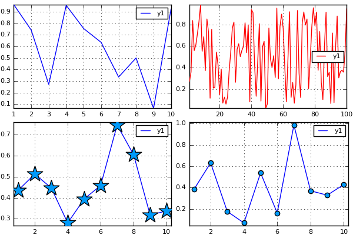
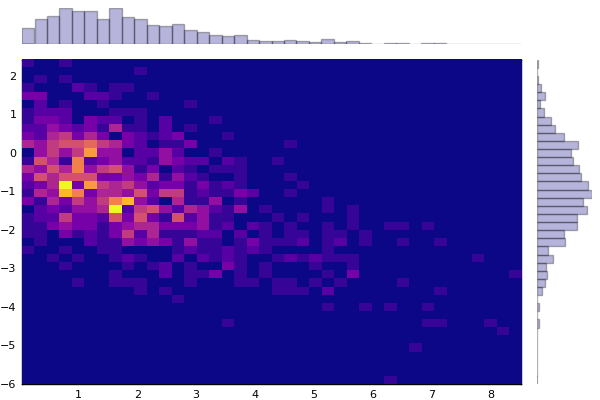

Advanced Recipes
Like other tools in Plots, recipes are relatively simple, but extremely powerful. A recipe is created by invoking the @recipe macro, which is defined in the lightweight package RecipesBase. There are many examples of recipes both within Plots and in many external packages, including PlotRecipes.
There are four main types of recipes in Plots (listed in the order they are processed):
- User Recipes
- Type Recipes
- Plot Recipes
- Series Recipes
The recipe type is determined completely by the dispatch signature. Each recipe type is called from a different part of the plotting pipeline, so you will choose a type of recipe to match how much processing you want completed before your recipe is applied.
These are the dispatch signatures for each type (note that most of these can accept positional or keyword args, denoted by ...):
- User Recipes:
@recipe function f(custom_arg_1::T, custom_arg_2::S, ...; ...) end- Process a unique set of types early in the pipeline. Good for user-defined types or special combinations of Base types.
- The
@userplotmacro is a nice convenience which both defines a new type (to ensure correct dispatch) and exports shorthands. - See
graphplotfor an example.
- Type Recipes:
@recipe function f{T<:MyType}(::Type{T}, val::T) end- For user-defined types which wrap or have a one-to-one mapping to something supported by Plots, simply define a conversion method.
- Note: this is effectively saying "when you see type T, replace it with ..."
- See
SymPyfor an example.
- Plot Recipes:
@recipe function f(::Type{Val{:myplotrecipename}}, plt::Plot; ...) end- These are called after input data has been processed, but before the plot is created.
- Build layouts, add subplots, and other plot-wide attributes
- See
marginalhistfor an example.
- Series Recipes:
@recipe function f(::Type{Val{:myseriesrecipename}}, x, y, z; ...) end- These are the last calls to happen. Each backend will support a short list of series types (
path,shape,histogram, etc). If a series type is natively supported, processing is passed (delegated) to the backend. If a series type is not natively supported by the backend, we attempt to call a "series recipe". - Note: If there's no series recipe defined, and the backend doesn't support it, you'll see an error like:
ERROR: The backend must not support the series type Val{:hi}, and there isn't a series recipe defined. - Note: You must have the
x, y, zincluded in the signature, or it won't be processed as a series type!!
- These are the last calls to happen. Each backend will support a short list of series types (
Recipe Syntax/Rules
Lets decompose what's happening inside the recipe macro, starting with a simple recipe:
type MyType end @recipe function f(::MyType, n::Integer = 10; add_marker = false) linecolor --> :blue seriestype := :path markershape --> (add_marker ? :circle : :none) delete!(d, :add_marker) rand(n) end
We create a new type MyType, which is empty, and used purely for dispatch. Our goal here is to create a random path of n points.
There are a few important things to know, after which recipes boil down to updating an attribute dictionary and returning input data:
- A recipe signature
f(args...; kw...)is converted into a definition ofapply_recipe(d::KW, args...)where:dis an attribute dictionary of typetypealias KW Dict{Symbol,Any}- Your
argsmust be distinct enough that dispatch will call your definition (and without masking an existing definition). Using a custom data type will ensure proper dispatch. - The function
fis unused/meaningless... call it whatever you want.
- The special operator
-->turnslinecolor --> :blueintoget!(d, :linecolor, :blue), setting the attribute only when it doesn't already exist. (Tip: Wrap the right hand side in parentheses for complex expressions.) - The special operator
:=turnsseriestype := :pathintod[:seriestype] = :path, forcing that attribute value. (Tip: Wrap the right hand side in parentheses for complex expressions.) - The return value of the recipe is the
argsof aRecipeDataobject, which also has a reference to the attribute dictionary. - A recipe returns a Vector{RecipeData}. We'll see how to add to this list later with the
@seriesmacro.
Breaking down the example:
In the example above, we use MyType for dispatch, with optional positional argument n::Integer:
@recipe function f(::MyType, n::Integer = 10; add_marker = false)
With a call to plot(MyType()) or similar, this recipe will be invoked. If linecolor has not been set, it is set to :blue:
linecolor --> :blue
The seriestype is forced to be :path:
seriestype := :path
The markershape is a little more complex; it checks the add_marker custom keyword, but only if markershape was not already set. (Note: the add_marker key is redundant, as the user can just set the marker shape directly... I use it only for demonstration):
markershape --> (add_marker ? :circle : :none)
then return the data to be plotted:
rand(n) end
Some example usages of our (mostly useless) recipe:
mt = MyType() plot( plot(mt), plot(mt, 100, linecolor = :red), plot(mt, marker = (:star,20), add_marker = false), plot(mt, add_marker = true) )

User Recipes
The example above is an example of a "user recipe", in which you define the full signature for dispatch. User recipes (like others) can be stacked and modular. The following is valid:
@recipe f(mt::MyType, n::Integer = 10) = (mt, rand(n)) @recipe f(mt::MyType, v::AbstractVector) = hist(v)
Here a call to plot(MyType()) will apply these recipes in order; first mapping mt to (mt, rand(10)) and then subsequently mapping to hist(rand(10)).
Type Recipes
For some custom data types, they are essentially light wrappers around built-in containers. For example you may have a type:
type MyWrapper v::Vector end
In this case, you'd like your MyWrapper objects to be treated just like Vectors, but do not wish to subtype AbstractArray. No worries! Just define a type recipe to do the conversion:
@recipe f(::Type{MyWrapper}, mw::MyWrapper) = mw.v
This signature is called on each input when dispatch did not find a suitable recipe for the full args.... So plot(rand(10), MyWrapper(rand(10))) will "just work".
Series Recipes
This is where the magic happens. You can create your own custom visualizations for arbitrary data. Quickly define violin plots, error bars, and even standard types like histograms and step plots. A histogram is a bar plot:
@recipe function f(::Type{Val{:histogram}}, x, y, z) edges, counts = my_hist(y, d[:bins], normed = d[:normalize], weights = d[:weights]) x := edges y := counts seriestype := :bar () end
while a 2D histogram is really a heatmap:
@recipe function f(::Type{Val{:histogram2d}}, x, y, z) xedges, yedges, counts = my_hist_2d(x, y, d[:bins], normed = d[:normalize], weights = d[:weights]) x := centers(xedges) y := centers(yedges) z := Surface(counts) seriestype := :heatmap () end
The argument y is always populated, the argument x is populated with a call like plot(x,y, seriestype =: histogram2d) and correspondingly for z, plot(x,y,z, seriestype =: histogram2d)
See below where I go through a series recipe for creating boxplots. Many of these "standard" recipes are defined in Plots, though they can be defined anywhere without requiring the package to be dependent on Plots.
Case studies
Marginal Histograms
In this case study, I'll explain how I built the marginalhist recipe for PlotRecipes. This is a nice example because, although easy to understand, it utilizes some great Plots features.
Marginal histograms are a visualization comparing two variables. The main plot is a 2D histogram, where each rectangle is a (possibly normalized and weighted) count of data points in that bucket. Above the main plot is a smaller histogram of the first variable, and to the right of the main plot is a histogram of the second variable. The full recipe:
@userplot MarginalHist @recipe function f(h::MarginalHist) if length(h.args) != 2 || !(typeof(h.args[1]) <: AbstractVector) || !(typeof(h.args[2]) <: AbstractVector) error("Marginal Histograms should be given two vectors. Got: $(typeof(h.args))") end x, y = h.args # set up the subplots legend := false link := :both ticks := [nothing :auto nothing] grid := false foreground_color_subplot := [RGBA(0,0,0,0) :match RGBA(0,0,0,0)] layout := @layout [tophist _ hist2d{0.9w,0.9h} righthist] # main histogram2d @series begin seriestype := :histogram2d subplot := 2 x, y end # these are common to both marginal histograms fillcolor := :black fillalpha := 0.3 linealpha := 0.3 seriestype := :histogram # upper histogram @series begin subplot := 1 x end # right histogram @series begin orientation := :h subplot := 3 y end end
Usage:
using Distributions, PlotRecipes pyplot() n = 1000 x = rand(Gamma(2), n) y = -0.5x + randn(n) marginalhist(x, y, fc=:plasma, bins=40)

Now I'll go through each section in detail:
The @userplot macro is a nice convenience for creating a new wrapper for input arguments that can be distinct during dispatch. It also creates lowercase convenience methods (marginalhist and marginalhist!) and exports them.
@userplot MarginalHist
thus create a type MarginalHist for dispatch. An object of type MarginalHist has the field args which is the tuple of arguments the plot function is invoked with, which can be either marginalhist(x,y,...) or plot(x,y, seriestype = :marginalhist). The first syntax is a shorthand created by the @userplot macro.
We dispatch only on the generated type, as the real inputs are wrapped inside it:
@recipe function f(h::MarginalHist)
Some error checking. Note that we're extracting the real inputs (like in a call to marginalhist(randn(100), randn(100))) into x and y:
if length(h.args) != 2 || !(typeof(h.args[1]) <: AbstractVector) || !(typeof(h.args[2]) <: AbstractVector) error("Marginal Histograms should be given two vectors. Got: $(typeof(h.args))") end x, y = h.args
Next we build the subplot layout and define some attributes. A few things to note:
- The layout creates three subplots (`_` is left blank)
- Attributes are mapped to each subplot when passed in as a matrix (row-vector)
- The attribute `link := :both` means that the y-axes of each row (and x-axes of
each column) will share data extrema. Other values include `:x`, `:y`,
`:all`, and `:none`.
# set up the subplots legend := false link := :both ticks := [nothing :auto nothing] grid := false foreground_color_subplot := [RGBA(0,0,0,0) :match RGBA(0,0,0,0)] layout := @layout [tophist _ hist2d{0.9w,0.9h} righthist]
Define the series of the main plot. The @series macro makes a local copy of the attribute dictionary d using a "let block". The copied dictionary and the returned args are added to the Vector{RecipeData} which is returned from the recipe. This block is similar to calling histogram2d!(x, y; subplot = 2, d...) (but you wouldn't actually want to do that).
Note: this @series block gets a "snapshot" of the attributes, so it contains anything that was set before this block, but nothing from after it. @series blocks can be standalone, as these are, or they can be in a loop.
# main histogram2d @series begin seriestype := :histogram2d subplot := 2 x, y end
Next we move on to the marginal plots. We first set attributes which are shared by both:
# these are common to both marginal histograms fillcolor := :black fillalpha := 0.3 linealpha := 0.3 seriestype := :histogram
Now we create two more series, one for each histogram.
# upper histogram @series begin subplot := 1 x end # right histogram @series begin orientation := :h subplot := 3 y end end
It's important to note: normally we would return arguments from a recipe, and those arguments would be added to a RecipeData object and pushed onto our Vector{RecipeData}. However, when creating series using the @series macro, you have the option of returning nothing, which will bypass that last step.
Series Recipe - Notched Box Plots
TODO
Documenting plot functions
A documentation string added above the recipe definition will have no effect, just like the function name is meaningless. Since everything in Julia can be associated with a doc-string, the documentation can be added to the name of the plot function like this
""" My docstring """ my_plotfunc
This can be put anywhere in the code and will appear on the call ?my_plotfunc.
Troubleshooting
It can sometimes be helpful when debugging recipes to see the order of dispatch inside the apply_recipe calls. Turn on debugging info with:
RecipesBase.debug()
You can also pass a Bool to the debug method to turn it on/off.
Here are some common errors, and what to look out for:
convertToAnyVector
ERROR: In convertToAnyVector, could not handle the argument types: <<some type>> [inlined code] from ~/.julia/v0.4/Plots/src/series_new.jl:87 in apply_recipe at ~/.julia/v0.4/RecipesBase/src/RecipesBase.jl:237 in _plot! at ~/.julia/v0.4/Plots/src/plot.jl:312 in plot at ~/.julia/v0.4/Plots/src/plot.jl:52
This error occurs when dispatch cannot recursively map input data to
This error occurs whenever there is an error thrown from within the recipe code. The type <<some type>> is the type the failing recipe is called with. This can give some hint as to where the error occured. Remember, there may be a large series of call to different recipes for a complicated plot, and <<some type>> is the type the innermost failing recipe was called with.
MethodError: start has no method matching start(::Void)
ERROR: MethodError: `start` has no method matching start(::Void) in collect at ./array.jl:260 in collect at ./array.jl:272 in plotly_series at ~/.julia/v0.4/Plots/src/backends/plotly.jl:345 in _series_added at ~/.julia/v0.4/Plots/src/backends/plotlyjs.jl:36 in _apply_series_recipe at ~/.julia/v0.4/Plots/src/plot.jl:224 in _plot! at ~/.julia/v0.4/Plots/src/plot.jl:537
This error is commonly encountered when a series type expects data for x, y, or z, but instead was passed nothing (which is of type Void). Check that you have a z value defined for 3D plots, and likewise that you have valid values for x and y. This could also apply to attributes like fillrange, marker_z, or line_z if they are expected to have non-void values.